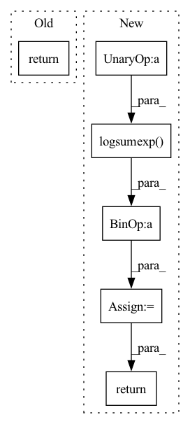

Pattern ID :37574

Before Change
return 0
def compute_global_classification(self, speaker_vector, speaker_id):
return 0
class SpeakerStack(nn.Module):
After Change
Returns:
loss: (batch_size, T, n_sources)
loss = distance + torch.logsumexp(- all_distance, dim=3) // (batch_size, T, n_sources)
if batch_mean:
loss = loss.mean(dim=0)
return loss
def compute_pit_speaker_loss(self, speaker_vector, speaker_embedding, all_speaker_embedding, feature_last=True, batch_mean=True):
In pattern: SUPERPATTERN
Frequency: 3
Non-data size: 6
Instances
Fragment ID: 108117669
Project Name: tky823/dnn-based_source_separation
Commit Name: ef4f341fcfa12a32b402a04333c6051659991ede
Time: 2021-11-03
Author: delta9guitar97@gmail.com
File Name: src/models/wavesplit.py
M Class Name: WaveSplit
N Class Name: WaveSplit
M Method Name: compute_global_classification(4)
N Method Name: compute_global_classification(3)
M Parent Class: WaveSplitBase
N Parent Class: nn.Module
M File Name: src/models/wavesplit.py
N File Name: src/models/wavesplit.py
M Start Line: 83
M End Line: 83
N Start Line: 195
N End Line: 208
'>
Before Change
return loss + loss_table
def compute_local_classification(self, speaker_vector, speaker_id):
return 0
def compute_global_classification(self, speaker_vector, speaker_id):
return 0
After Change
Returns:
loss: (batch_size, T, n_sources)
loss = distance + torch.logsumexp(- distance, dim=2, keepdim=True) // (batch_size, T, n_sources)
if batch_mean:
loss = loss.mean(dim=0)
return loss
def compute_global_classification(self, distance, all_distance, batch_mean=True):
'>
Fragment ID: 108117671
Project Name: tky823/dnn-based_source_separation
Commit Name: ef4f341fcfa12a32b402a04333c6051659991ede
Time: 2021-11-03
Author: delta9guitar97@gmail.com
File Name: src/models/wavesplit.py
M Class Name: WaveSplit
N Class Name: WaveSplit
M Method Name: compute_local_classification(3)
N Method Name: compute_local_classification(3)
M Parent Class: WaveSplitBase
N Parent Class: nn.Module
M File Name: src/models/wavesplit.py
N File Name: src/models/wavesplit.py
M Start Line: 80
M End Line: 80
N Start Line: 188
N End Line: 193
'>
Before Change
prob += torch.exp(-((z[:, 0] - 2 * np.sin(2 * np.pi / self.n_modes * i)) ** 2
+ (z[:, 1] - 2 * np.cos(2 * np.pi / self.n_modes * i)) ** 2)
/ (2 * self.scale ** 2)) / (2 * np.pi * self.scale ** 2 * self.n_modes)
return torch.log(prob + 1e-10)
def sample(self, num_samples=1):
eps = torch.randn((num_samples, 2), dtype=self.scale.dtype, device=self.scale.device)
After Change
+ (z[:, 1] - 2 * np.cos(2 * np.pi / self.n_modes * i)) ** 2)\
/ (2 * self.scale ** 2)
d = torch.cat((d, d_), 1)
log_p = - torch.log(2 * np.pi * self.scale ** 2 * self.n_modes) \
- torch.logsumexp(-d, 1)
return log_p
def sample(self, num_samples=1):
eps = torch.randn((num_samples, 2), dtype=self.scale.dtype, device=self.scale.device)
'>
Fragment ID: 108117677
Project Name: vincentstimper/normalizing-flows
Commit Name: d9e324c6f8307204350588cc5387c7cff82c8274
Time: 2020-09-22
Author: vincent.stimper@gmail.com
File Name: normflow/distributions.py
M Class Name: CircularGaussianMixture
N Class Name: CircularGaussianMixture
M Method Name: log_prob(2)
N Method Name: log_prob(2)
M Parent Class: nn.Module
N Parent Class: nn.Module
M File Name: normflow/distributions.py
N File Name: normflow/distributions.py
M Start Line: 905
M End Line: 910
N Start Line: 905
N End Line: 913